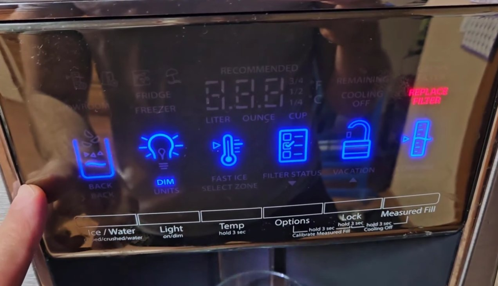
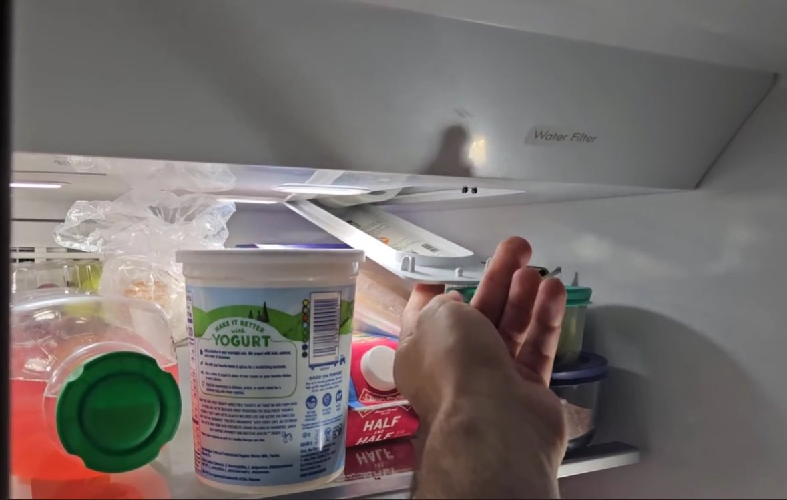
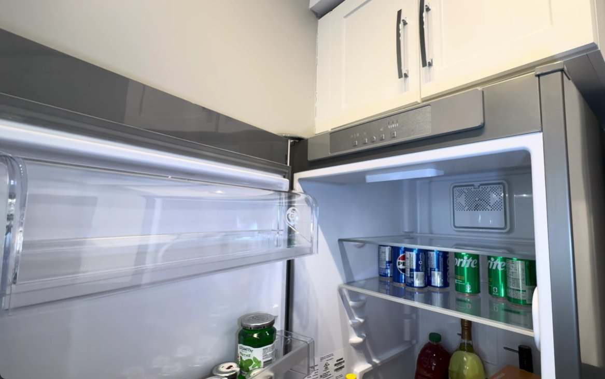
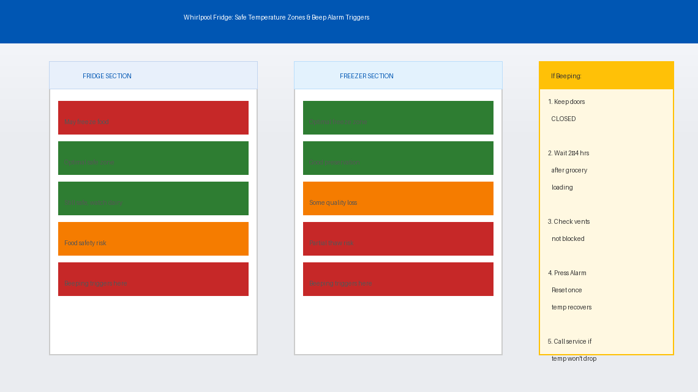
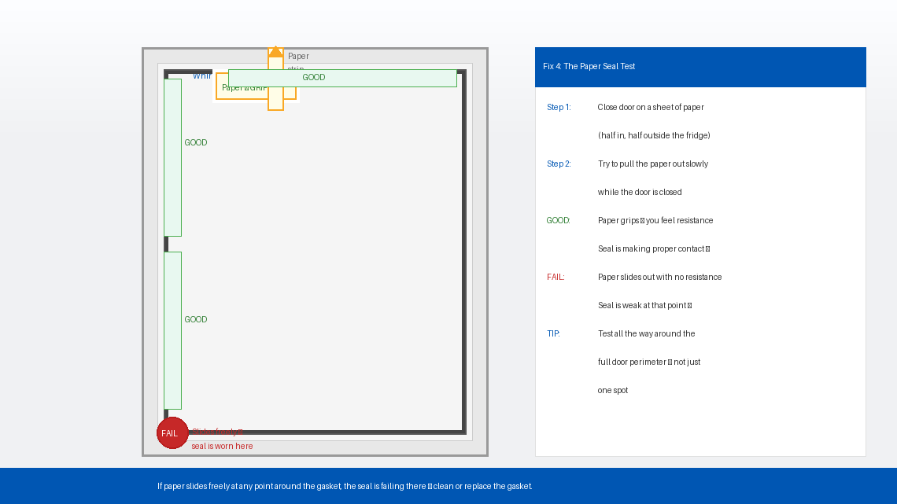
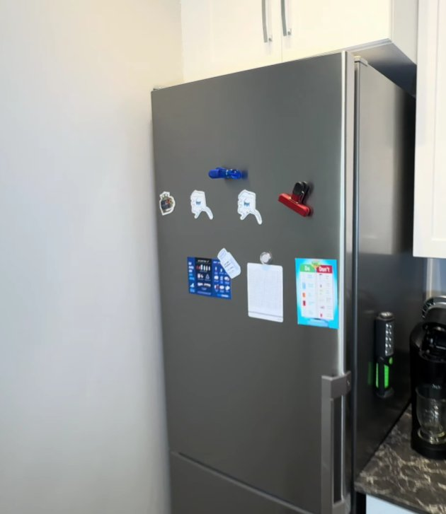
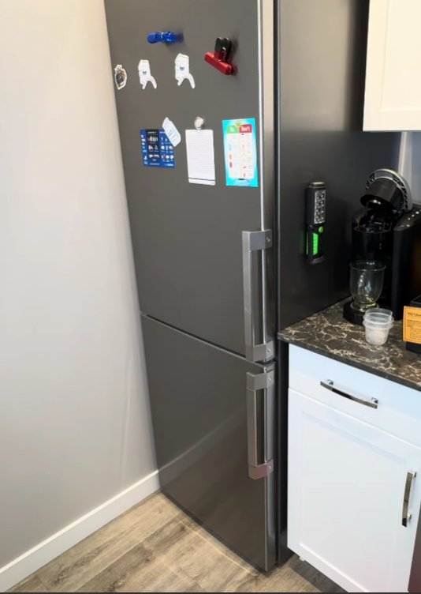

That Relentless Beeping at 11 PM. You Know the Feeling.
It starts subtly. A soft beep from the kitchen. You ignore it, assuming it will stop on its own. Then it beeps again. And again. And again — until you’re standing in front of your Whirlpool fridge, door closed, everything seemingly fine, and that relentless beeping is drilling straight through your patience like a tiny, cold alarm that refuses to quit.
You’ve checked the door. It’s shut. You’ve pushed it harder. Still beeping. You’ve unplugged it and plugged it back in. Silence for thirty seconds — then it starts right back up.
Here’s what most people don’t know: a Whirlpool fridge that beeps continuously is not necessarily broken. In the majority of cases, it’s doing exactly what it was designed to do — alerting you to a condition it was programmed to flag. And once you know what it’s trying to tell you, silencing it and fixing the underlying cause is usually a straightforward job that takes well under an hour.
This guide covers every common cause of continuous beeping in Whirlpool refrigerators and walks you through the fixes, simplest first.
What Does Continuous Beeping Mean?
Unlike a single-beep alert that plays once and stops, continuous or repeated beeping from a Whirlpool fridge means the appliance’s control system has detected an active, ongoing condition it considers a problem — and it won’t stop alerting you until that condition is resolved or manually acknowledged.
Whirlpool fridges use their beep alarm system to flag several different situations. The most common causes, in order of how frequently they occur, are:
- The door is ajar or not sealing fully. This is the most common cause by a wide margin. A door that’s open even a few millimetres — due to a food container sticking out, a warped seal, or a drawer not fully closed — triggers the door alarm continuously.
- The internal temperature has risen above safe limits. If the fridge climbs above approximately 15°C (59°F) or the freezer above -9°C (16°F), the temperature alarm activates. This happens after a prolonged power outage, after loading large amounts of warm food, or because of a cooling problem.
- A control panel alarm needs to be acknowledged. Some Whirlpool models beep after a power interruption, a door-open event, or a filter reminder — and won’t stop until you press a specific button to clear it.
- The door gasket is worn or dirty, causing the fridge to believe the door is open because the seal isn’t making full magnetic contact.
- A sensor or control board fault — less common, but possible after a power surge or component failure.
In plain English: your fridge is either telling you the door isn’t sealed, the temperature is off, or it needs you to press a button to acknowledge an alert. Start with the door — it’s the answer more than half the time.

Tools You’ll Need
You likely won’t need any tools at all for the first few fixes. Here’s the full list in case you need to go further:
- A clean cloth or sponge
- Mild dish soap and warm water
- A thin piece of paper (for the door seal test)
- A refrigerator thermometer (optional — your phone’s smart home app works too if connected)
- A Phillips head screwdriver
- About 15–30 minutes of your time
Step-by-Step Fixes (Easiest to Hardest)
Work through these in order. Most people fix continuous beeping at Fix 1 or Fix 2 without touching a single tool.
Don’t just glance at the main fridge door. Whirlpool fridges with French door, bottom freezer, or multi-door configurations have multiple independently sealed compartments — any one of them being slightly ajar will trigger the alarm.
- Open and firmly reclose the main refrigerator door. Don’t just push — open it fully, then swing it shut until you feel and hear it seat properly.
- Check the freezer drawer or door in the same way. Bottom-mount freezer drawers are notorious for appearing closed while being 5–10mm short of a full seal.
- If your model has a deli drawer, crisper drawer, or an interior door (like an in-door ice compartment), check those too.
- Look inside for anything that might be blocking the door from closing fully — a tall bottle in the door shelf, a food container sticking out past the shelf edge, or a bag that’s slipped behind a shelf.
- Once everything is firmly closed, wait 30 seconds. If the beeping stops, something was ajar.

Many Whirlpool models won’t stop beeping simply because the door is now closed — the alarm needs to be manually acknowledged and cleared via the control panel. This trips up a lot of people who assume closing the door should silence it automatically.
- Look at the control panel on the front of the fridge (either inside at the top, or on the exterior door panel depending on your model).
- Look for a button labelled “Alarm,” “Door Alarm,” “Reset,” or “Filter Reset.” On some models, holding the “Lock” button for 3 seconds clears the alarm.
- Press and hold the alarm button for 3–5 seconds until you hear a single confirming beep or the alarm indicator light turns off.
- If you’re unsure which button to press, search for your model number at whirlpool.com/support for a free digital copy of your manual.
- After clearing the panel alert, monitor the fridge for the next 10 minutes to see if beeping returns.

If the beeping isn’t a door alarm, it may be a temperature alarm — meaning your fridge or freezer has warmed beyond the safe zone. This commonly happens after a power outage, after the fridge was left open for an extended period, or if the cooling system is struggling.
- Check the temperature display. The fridge section should read between 2°C and 5°C (35°F–41°F) and the freezer between -15°C and -18°C (0°F–5°F).
- If recently loaded with warm groceries, the temperature rise is normal and temporary. Give the fridge 2–4 hours to return to set temperature with the doors closed.
- Check that the condenser vents at the back or bottom are not blocked by being pushed too close to a wall. Whirlpool recommends at least 2.5 cm (1 inch) clearance on all sides.
- Once the temperature returns to normal range, press the alarm reset button (Fix 2) to clear the temperature alert if it doesn’t clear automatically.

A door gasket that looks fine visually can still fail to seal properly if it’s dirty, slightly flattened, or has a small deformation you haven’t noticed. A weak magnetic seal allows cold air to leak out slowly, which triggers the door alarm even when the door appears to be fully closed.
- Unplug the fridge.
- Run your fingers slowly along the entire door gasket — the flexible rubber seal that runs around the full perimeter of each door. Feel for any section that is cracked, torn, hardened, flattened, or has pulled away from the door channel.
- Mix a small amount of mild dish soap in warm water. Using a soft cloth, thoroughly clean the entire gasket, getting into the folds and creases where food debris and grease accumulate. Do not use bleach or harsh cleaners — they degrade the rubber and accelerate cracking.
- Wipe dry with a clean cloth.
- Perform the paper test: close the door on a single sheet of paper so it’s half inside and half outside the fridge. Try to pull the paper out. If it slides out easily with no resistance, the seal at that point is weak. Repeat this around the full perimeter.
- If the seal fails the paper test or shows visible damage, the gasket needs to be replaced. Whirlpool door gaskets cost approximately ₹800–₹2,500 (India) or $25–$70 (US) and are a pull-and-press DIY replacement — no special tools needed.

If beeping persists after addressing the door, temperature, and gasket — especially if it started right after a power outage or surge — the control board may be stuck in an alarm state that a full power reset will clear.
- Turn the temperature controls inside the fridge to “Off” if your model has manual dials, or press and hold the “Power” button if it has a digital panel.
- Unplug the refrigerator from the wall socket completely.
- Wait a full 10 minutes. This allows the control board’s capacitors to fully discharge and reset.
- Plug the fridge back in and set the temperature controls back to your normal settings — typically 3°C (37°F) for the fridge and -18°C (0°F) for the freezer.
- Allow the fridge to run for 15–20 minutes without opening the doors. Listen for beeping.
On most Whirlpool models, a full power reset clears any alarm triggered by a power interruption event, even if the underlying cause has already been resolved.

If your fridge beeps intermittently or mainly at certain times of day (especially after heavy use), the door may be slightly misaligned — hanging low enough that the gasket seal isn’t consistent across its full perimeter.
- Unplug the fridge and open the door fully.
- Look at the top hinge — the cover cap can usually be pried off gently with a flathead screwdriver to reveal the hinge screws beneath.
- Check whether the door hangs level. Sight down from the top to the bottom — it should be perfectly vertical on both sides.
- If one side appears lower, loosen the top hinge screws slightly, adjust the door upward until level, then retighten.
- Check the door alignment at the gasket by closing the door and verifying the gasket compresses evenly with no visible gaps.
- Plug in, test, and listen.

When to Call a Professional
Continuous beeping in Whirlpool fridges is almost always one of the fixable issues above. But there are specific situations where the problem has moved beyond a DIY fix:
- The fridge is running but not cooling — the compressor and fan are audible, but internal temperature keeps rising regardless of how long the doors stay closed. This indicates a refrigerant leak or compressor failure, neither of which can be diagnosed or fixed without specialist equipment.
- The beeping is accompanied by an error code — codes like F1, F5, E1, or E2 point to specific sensor or component failures. Look yours up at whirlpool.com/support and call if it indicates a board or sensor fault.
- The fridge has stopped cooling entirely. Any food that has been above 4°C (40°F) for more than 2 hours should be considered unsafe to eat — prioritise food safety first, appliance repair second.
- Your fridge is under warranty. Whirlpool offers a standard 1-year comprehensive warranty in India and the US, with extended coverage on the compressor. Attempting internal repairs can void your coverage — contact Whirlpool first.
To reach Whirlpool support: visit whirlpool.in/support (India) or whirlpool.com/support (US). In India, Whirlpool’s customer care number is 1800-208-1800 (toll-free). Have your model number and purchase date ready — both are on the sticker inside the door frame.
Quick Summary
| Fix | Difficulty | Time Needed |
|---|---|---|
| Check and firmly close all doors and drawers | Very Easy | 1 minute |
| Press alarm reset on control panel | Very Easy | 2 minutes |
| Check internal temperature and allow recovery | Easy | Up to 4 hours |
| Clean door gasket and perform paper seal test | Easy | 15 minutes |
| Full power reset (unplug for 10 minutes) | Very Easy | 10 minutes |
| Check and realign door hinges | Moderate | 20 minutes |
Start at the top. In most households, a Whirlpool fridge that’s beeping continuously has a drawer that’s 5mm from fully closed or a control panel alert waiting to be acknowledged. Either way, you’ll likely have silence restored before your next cup of tea goes cold.
If the beeping came back after you thought you’d fixed it, Fix 4 (gasket cleaning and paper test) is the one most people skip — and the one that catches the problem they missed the first time around.